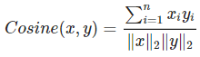
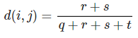

Zulfa Lailatul Marom (180411100134)
Mengukur Jarak Data
Mengukur Jarak Data Tipe Numerik
Kemiripan(similarity) adalah ukuran numerik dimana objeknya mirip, dengan nilai 0 jika tidak mirip dan nilai 1 jika itu mirip. Sementara ketidakmiripan (dissimilarity) adalah derajat numerik dimana dua objek yang berbeda, jangkauan nilai 0 sampai 1 atau bahkan sampai ∞. Istilah ketidakmiripan bisa disebut juga sebagai ukuran jarak(distance) antara dua data.
Terdapat banyak cara yang dapat digunakan untuk menghitung jarak (ketidakmiripan) dua objek dengan beberapa atribut, diantaranya:
- Euclidean Distance
Euclidean distance adalah perhitungan jarak dari 2 buah titik dalam Euclidean space, dengan perhitungan sebagai berikut.
- Manhattan Distance (city block distance)
Jarak Manhattan adalah jarak dari suatu titik menuju titik lainnya di bidang Cartesian dengan menyusuri bagian vertikal dan horizontal, tanpa pernah kembali.
- Minkowski
Jarak Minkowski adalah metrik dalam ruang vektor normed yang dapat dianggap sebagai generalisasi dari jarak Euclidean dan jarak Manhattan .
- Average Distance
adalah versi modifikasi dari jarak Euclidean untuk memperbaiki hasil.
- Weighted Euclidean Distance
adalah versi modifikasi lain dari jarak Euclidean Distance.
- Chord Distance
- Mahalanobis Distance
Mahalanobis distance adalah suatu metode statistika yang digunakan untuk mendapatkan suatu data dengan jarak tertentu terhadap mean data tersebut sehingga diperoleh suatu penyebaran data yang memiliki pola terhadap nilai mean. Berikut adalah rumus dari mahalanobis distance:
- Cosine measure
Metode ini digunakan untuk menghitung dua objek (vektor) dokumen.


- Pearson correlation
Mengukur Jarak Data Tipe Binary
Variabel biner adalah variabel yang hanya mempunyai hanya dua kemungkinan nilai yaitu 0 atau 1, “ya” atau “tidak”, “benar” atau “salah”. Contoh atribut tes kehamilan dari pasien Misalnya 1 menunjukkan bahwa pasien tersebut hamil, sedangkan 0 menunjukkan bahwa pasien tersebut sedang tidak hamil.
Pada atribut biner simetris, untuk nilai bobotnya sama. Jika i dan j dinyatakan sebagai atribut biner simetris, maka antar i dan j adalah

Pada atribut biner asimetris, kemungkinan yang bernilai positif(1) dianggap lebih signifikan daripada yang bernilai negatif(0) sehingga kecocokan negatif akan diabaikan. berikut perhitungannya.
Biner asimetris kesamaan antara objek ii dan jj dapat dihitung dengan:
Untuk menghitung jarak antar variabel biner biasanya digunakan metode:
- Simple Matching Distance
- Jaccard Distance
- Hamming Distance
Mengukur Jarak Data Tipe Categorical
-
Overlay Metric
Ketika semua atribut adalah bertipe nominal, ukuran jarak yang paling sederhana adalah dengan Ovelay Metric (OM) yang dinyatakan dengan
-
Value Different Metric (VDM)
kemudian dikembangkan oleh Myles dan Hand dan didefinisikan dengan

-
Minimum Risk Metric(MRM)
Mengukur Jarak Data Tipe Ordinal
Nilai/atribut yang bisa dibedakan dan diurutkan dari objek yang kita ukur itu disebut Ordinal. Dalam hal ini kita bisa mengatakan A "lebih" baik dibanding B atau B "kurang" dari A, namun kita tidak bisa mengatakan seberapa banyak lebihnya A dibanding B. Dengan demikian, batas satu variasi nilai ke variasi yang lain tidak jelas sehingga yang dapat dibandingkan hanyalah apakah nilai tersebut lebih tinggi, sama, atau lebih rendah daripada nilai yang lain. Contohnya tingkat keparahan penyakit, bahwa pasien yang sedang sakit tersebut mengidap penyakit yang parah atau penyakit yang tidak parah.
Mengukur Jarak Data Tipe Campuran
Terkadang ditemukan bahwa atribut (fitur) pada objek (vektor) terdiri dari tipe data campuran (tidak seragam). Tidak selalu semua atribut bertipe numerik (interval atau rasio) atau bertipe kategoris (nominal dan ordinal). Untuk menghitung nilai kemiripan objek dengan atribut campuran kita bisa gunakan persamaan berikut:
si merupakan ukuran kemiripan diantara fitur ke-I dari x dan y, sedangkan wi adalah faktor bobot yang berkorelasi dengan fitur ke-1. Cara menentukan faktor bobot adalah dengan ketentukan sebagai berikut: wi = 0 , apabila nilai fitur-I dari objek x dan y tidak teridentifikasi. wi = 0 , apabila nilai si = 0. wi = 1 , apabila selain dua syarat di atas.
Contoh Program
import pandas as pd
from scipy import stats
import numpy as np
import seaborn as sns
import matplotlib.pyplot as plt
data = pd.read_csv("Abalone.csv",delimiter=";")
k=data.iloc[1:7]
k
numerical=[8]
ordinal=[1,7]
from IPython.display import HTML, display
import tabulate
table=[
["Data"]+["Jarak"]+["Numeric"]+["Ordinal"]+["Categorical"]+["Binary"],
["v1-v2"]+[0]+[0]+[0]+[0]+[0],
["v1-v3"]+[0]+[0]+[0]+[0]+[0],
["v2-v3"]+[0]+[0]+[0]+[0]+[0],
["v3-v4"]+[0]+[0]+[0]+[0]+[0],
["v4-v5"]+[0]+[0]+[0]+[0]+[0],
["v5-v6"]+[0]+[0]+[0]+[0]+[0]
]
display(HTML(tabulate.tabulate(table, tablefmt='html')))
Jarak Numerik
def chordDist(v1,v2,jnis):
jmlh=0
normv1=0
normv2=0
for x in range (len(jnis)):
normv1=normv1+(int(k.values.tolist()[v1][jnis[x]])**2)
normv2=normv2+(int(k.values.tolist()[v1][jnis[x]])**2)
jmlh=jmlh+(int(k.values.tolist()[v1][jnis[x]])*int(k.values.tolist()[v2][jnis[x]]))
return ((2-(2*jmlh/((normv1**0.5)*(normv2**0.5)))**0.5))
from IPython.display import HTML, display
import tabulate
table=[
["Data"]+["Jarak"]+["Numeric"]+["Ordinal"]+["Categorical"]+["Binary"],
["v1-v2"]+[0]+["{:.2f}".format(chordDist(0,1,numerical))]+[0]+[0]+[0],
["v1-v3"]+[0]+["{:.2f}".format(chordDist(0,2,numerical))]+[0]+[0]+[0],
["v2-v3"]+[0]+["{:.2f}".format(chordDist(1,2,numerical))]+[0]+[0]+[0],
["v3-v4"]+[0]+["{:.2f}".format(chordDist(2,3,numerical))]+[0]+[0]+[0],
["v4-v5"]+[0]+["{:.2f}".format(chordDist(3,4,numerical))]+[0]+[0]+[0],
["v5-v6"]+[0]+["{:.2f}".format(chordDist(2,3,numerical))]+[0]+[0]+[0],
]
display(HTML(tabulate.tabulate(table, tablefmt='html')))
Jarak Ordinal
def ordDist(v1,v2,jns):
jmlh=0
for x in range (len(jns)):
z1=int(k.values.tolist()[v1][jns[x]])-1
z2=int(k.values.tolist()[v2][jns[x]])-1
jmlh=jmlh+chordDist(z1,z2,jns)
return (jmlh)
from IPython.display import HTML, display
import tabulate
table=[
["Data"]+["Jarak"]+["Numeric"]+["Ordinal"]+["Categorical"]+["Binary"],
["v1-v2"]+[0]+["{:.2f}".format(chordDist(0,1,numerical))]+["{:.2f}".format(ordDist(0,1,ordinal))]+[categoricalDist(0,1,categorical)]+[binaryDist(0,1,binary)],
["v1-v3"]+[0]+["{:.2f}".format(chordDist(0,2,numerical))]+["{:.2f}".format(ordDist(0,2,ordinal))]+[categoricalDist(0,2,categorical)]+[binaryDist(0,1,binary)],
["v2-v3"]+[0]+["{:.2f}".format(chordDist(1,2,numerical))]+["{:.2f}".format(ordDist(1,2,ordinal))]+[categoricalDist(1,2,categorical)]+[binaryDist(0,1,binary)],
["v3-v4"]+[0]+["{:.2f}".format(chordDist(2,3,numerical))]+["{:.2f}".format(ordDist(2,3,ordinal))]+[categoricalDist(2,3,categorical)]+[binaryDist(0,1,binary)],
["v4-v5"]+[0]+["{:.2f}".format(chordDist(3,4,numerical))]+["{:.2f}".format(ordDist(3,4,ordinal))]+[categoricalDist(3,4,categorical)]+[binaryDist(0,1,binary)],
["v5-v6"]+[0]+["{:.2f}".format(chordDist(4,5,numerical))]+["{:.2f}".format(ordDist(4,5,ordinal))]+[categoricalDist(4,5,categorical)]+[binaryDist(0,1,binary)],
]
display(HTML(tabulate.tabulate(table, tablefmt='html')))
Jarak Categorical
def categoricalDist(v1,v2,jnis):
jmlh=0
for x in range (len(jnis)):
if (k.values.tolist()[v1][jnis[x]])!=(k.values.tolist()[v2][jnis[x]]):
jmlh=jmlh+1
return (jmlh)
from IPython.display import HTML, display
import tabulate
table=[
["Data"]+["Jarak"]+["Numeric"]+["Ordinal"]+["Categorical"]+["Binary"],
["v1-v2"]+[0]+["{:.2f}".format(chordDist(0,1,numerical))]+["{:.2f}".format(ordDist(0,1,ordinal))]+[categoricalDist(0,1,categorical)]+[binaryDist(0,1,binary)],
["v1-v3"]+[0]+["{:.2f}".format(chordDist(0,2,numerical))]+["{:.2f}".format(ordDist(0,2,ordinal))]+[categoricalDist(0,2,categorical)]+[binaryDist(0,1,binary)],
["v2-v3"]+[0]+["{:.2f}".format(chordDist(1,2,numerical))]+["{:.2f}".format(ordDist(1,2,ordinal))]+[categoricalDist(1,2,categorical)]+[binaryDist(0,1,binary)],
["v3-v4"]+[0]+["{:.2f}".format(chordDist(2,3,numerical))]+["{:.2f}".format(ordDist(2,3,ordinal))]+[categoricalDist(2,3,categorical)]+[binaryDist(0,1,binary)],
["v4-v5"]+[0]+["{:.2f}".format(chordDist(3,4,numerical))]+["{:.2f}".format(ordDist(3,4,ordinal))]+[categoricalDist(3,4,categorical)]+[binaryDist(0,1,binary)],
["v5-v6"]+[0]+["{:.2f}".format(chordDist(4,5,numerical))]+["{:.2f}".format(ordDist(4,5,ordinal))]+[categoricalDist(4,5,categorical)]+[binaryDist(0,1,binary)],
]
display(HTML(tabulate.tabulate(table, tablefmt='html')))
Jarak Binary
def binaryDist(v1,v2,jnis):
q=0
r=0
s=0
t=0
for x in range (len(jnis)):
if (int(k.values.tolist()[v1][jnis[x]]))==1 and (int(k.values.tolist()[v2][jnis[x]]))==1:
q=q+1
elif (int(k.values.tolist()[v1][jnis[x]]))==1 and (int(k.values.tolist()[v2][jnis[x]]))==2:
r=r+1
elif (int(k.values.tolist()[v1][jnis[x]]))==2 and (int(k.values.tolist()[v2][jnis[x]]))==1:
s=s+1
else:
t=t+1
return ((r+s)/(q+r+s+t))
from IPython.display import HTML, display
import tabulate
table=[
["Data"]+["Jarak"]+["Numeric"]+["Ordinal"]+["Categorical"]+["Binary"],
["v1-v2"]+[0]+["{:.2f}".format(chordDist(0,1,numerical))]+["{:.2f}".format(ordDist(0,1,ordinal))]+[categoricalDist(0,1,categorical)]+[binaryDist(0,1,binary)],
["v1-v3"]+[0]+["{:.2f}".format(chordDist(0,2,numerical))]+["{:.2f}".format(ordDist(0,2,ordinal))]+[categoricalDist(0,2,categorical)]+[binaryDist(0,1,binary)],
["v2-v3"]+[0]+["{:.2f}".format(chordDist(1,2,numerical))]+["{:.2f}".format(ordDist(1,2,ordinal))]+[categoricalDist(1,2,categorical)]+[binaryDist(0,1,binary)],
["v3-v4"]+[0]+["{:.2f}".format(chordDist(2,3,numerical))]+["{:.2f}".format(ordDist(2,3,ordinal))]+[categoricalDist(2,3,categorical)]+[binaryDist(0,1,binary)],
["v4-v5"]+[0]+["{:.2f}".format(chordDist(3,4,numerical))]+["{:.2f}".format(ordDist(3,4,ordinal))]+[categoricalDist(3,4,categorical)]+[binaryDist(0,1,binary)],
["v5-v6"]+[0]+["{:.2f}".format(chordDist(4,5,numerical))]+["{:.2f}".format(ordDist(4,5,ordinal))]+[categoricalDist(4,5,categorical)]+[binaryDist(0,1,binary)],
]
display(HTML(tabulate.tabulate(table, tablefmt='html')))
Jarak Campuran
def jarak(v1,v2):
return ((chordDist(v1,v2,numerical)+ordDist(v1,v2,ordinal)+categoricalDist(v1,v2,categorical)+binaryDist(v1,v2,binary))/4)
from IPython.display import HTML, display
import tabulate
table=[
["Data"]+["Jarak"]+["Numeric"]+["Ordinal"]+["Categorical"]+["Binary"],
["v1-v2"]+[0]+["{:.2f}".format(chordDist(0,1,numerical))]+["{:.2f}".format(ordDist(0,1,ordinal))]+[categoricalDist(0,1,categorical)]+[binaryDist(0,1,binary)],
["v1-v3"]+[0]+["{:.2f}".format(chordDist(0,2,numerical))]+["{:.2f}".format(ordDist(0,2,ordinal))]+[categoricalDist(0,2,categorical)]+[binaryDist(0,1,binary)],
["v2-v3"]+[0]+["{:.2f}".format(chordDist(1,2,numerical))]+["{:.2f}".format(ordDist(1,2,ordinal))]+[categoricalDist(1,2,categorical)]+[binaryDist(0,1,binary)],
["v3-v4"]+[0]+["{:.2f}".format(chordDist(2,3,numerical))]+["{:.2f}".format(ordDist(2,3,ordinal))]+[categoricalDist(2,3,categorical)]+[binaryDist(0,1,binary)],
["v4-v5"]+[0]+["{:.2f}".format(chordDist(3,4,numerical))]+["{:.2f}".format(ordDist(3,4,ordinal))]+[categoricalDist(3,4,categorical)]+[binaryDist(0,1,binary)],
["v5-v6"]+[0]+["{:.2f}".format(chordDist(4,5,numerical))]+["{:.2f}".format(ordDist(4,5,ordinal))]+[categoricalDist(4,5,categorical)]+[binaryDist(0,1,binary)],
]
display(HTML(tabulate.tabulate(table, tablefmt='html')))
Terimakasih, sekian penjelasan tentang Mengukur Jarak Data. Semoga dapat bermanfaat untuk kalian. Jangan lupa dicoba dan dipelajari lebih dalam:)
Sumber :
http://jauhar-aribi.blogspot.com/2007/03/mahalanobis-distance.html
https://repository.unikom.ac.id/49057/1/Pertemuan%204%20-%20Materi%20%5BDM%20-%202016%5D.pdf
https://blogs.itb.ac.id/anugraha/2014/09/10/teori-pengukuran-jarak/
https://en.wikipedia.org/wiki/Minkowski_distance
https://repository.unikom.ac.id/49057/1/Pertemuan%204%20-%20Materi%20%5BDM%20-%202016%5D.pdf